[1] 12 10 15 11 15 17 12 13 12 16 9 14 12 12 9 10 10 14 9 13 10 11 10 14 13
[26] 15 9 13 11 9 16 11 9 15 12 15Raster Data
Rodney Dyer, PhD
Rasters
Rasters
Rasters represent data distributed continuously across a spatial extent
Examples:
- Elevation (continuous)
- Habitat Type (discrete)
- Precipitation (continuous)
- Impervious Surfaces (discrete)
What is the Structure of a Raster?
A Raster is simply a matrix of values with some additional decorations on it that allow it to have a spatial context.
Spatial Designations
For each value in the matrix, when it is turned into a raster object:
The
cell(pixel) has a defined spatial extent (width, height, & origin).All the physical space represented by that cell has exactly the same value
The courseness of the raster is question dependent:
3x5 matrix for Continental US may not adequately capture elevation trends.
1m2 matrix for elevation may be a bit too big.
Matrix \(\to\) Raster
Plotting a Raster
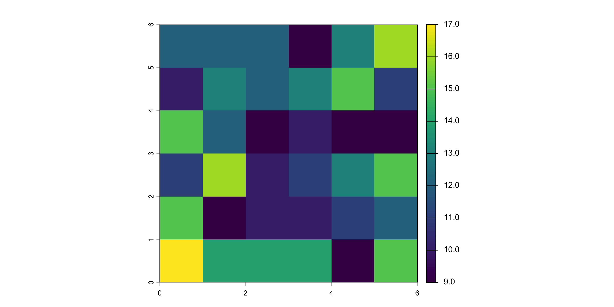
Matrix \(\to\) Raster
Notice that when I print it out, it does not show the data, but a summary of the data along with some key data about the contents, including:
- A class definition (
SpatRaster) - The size of the underlying data matrix (rows, columns, and layers),
- The resolution (e.g., the spatial extent of the sides of each pixel). Since we have no CRS here, it is equal to \(nrow(x)^{-1}\) and \(ncol(x)^{-1}\).
- The extent (the bounding box) and again since we do not have a CRS defined it just goes from \(0\) to \(1\).
- The
coord. ref.(missing) - The source, either
memoryor the name of the file the values are read from.
Getting Values from a Raster
You can grab data from a SpatRaster just like a matrix, though the output shows you which layer the data are being pulled from (foreshadowing).
Common File Types
| Format | Primary Use Case | Multi-band/3D+ Support | Cloud-Native Readiness |
|---|---|---|---|
| GeoTIFF/COG | Orthoimagery, DEMs, land cover, satellite tiles | Multi-band 2D | Native (COG) |
| NetCDF/HDF5 | Climate, atmospheric, oceanographic data grids | Multidimensional (\(x\),\(y\),\(z\),\(t\)) | Moderate (moving to Zarr) |
| ERDAS Imagine (.img) | Desktop GIS workflows, local image analysis | Multi-band 2D | Low (file-based) |
Loading A Raster - Example
class : SpatRaster
size : 3600, 3600, 1 (nrow, ncol, nlyr)
resolution : 0.008333333, 0.008333333 (x, y)
extent : -120, -90, 4.163336e-16, 30 (xmin, xmax, ymin, ymax)
coord. ref. : lon/lat WGS 84 (EPSG:4326)
source : alt_22.tif
name : alt_22
min value : -202
max value : 5469Notice that this raster has a defined CRS and the extent is in the units of the datum (e.g., from -120 to -90 degrees longitude and 0 to 30 degrees latitude).
Visualizing Rasters
Built-in Plotting
Just like all things in R, SpatRaster objects can be visualized using built-in functions as well as functions from external libraries.
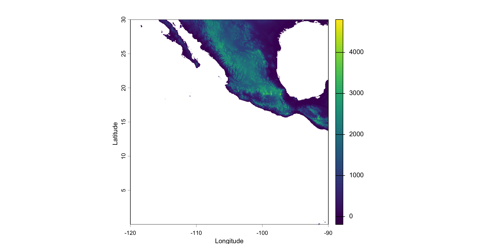
Raster Sizes
This particular raster is quite large (in terms of the number of cells)
class : SpatRaster
size : 3600, 3600, 1 (nrow, ncol, nlyr)
resolution : 0.008333333, 0.008333333 (x, y)
extent : -120, -90, 4.163336e-16, 30 (xmin, xmax, ymin, ymax)
coord. ref. : lon/lat WGS 84 (EPSG:4326)
source : alt_22.tif
name : alt_22
min value : -202
max value : 5469These data only represent the elevation of the land. Where there is water, the value in the underlying matrix is NA.
| Cell Type | Count |
|---|---|
| Land | 2,469,350 |
| Water | 10,490,650 |
Cropping
One of the first things to do is to crop the data down to represent the size and extent of our study area. If we over 10 million missing data points (the ocean) and most of Mexico in this raster above but we are only working with sites in Baja California (Norte y Sur), we would do well to excise (or crop) the raster to only include the area we are interested in working with.
Cropping Workflow:
- Define a bounding box (the spatial extent of the region of interest)
- Expand it a bit so that points are not on the edges of the box.
- Create an extent with
ext() - Crop the original matrix to represent the boundaries defined in the extent
Cropping 1: Bounding Box
Let’s use the beetle data from the Spatial Points Lecture as the data we will be working with.
Cropping 2: Expand the Bounding Box
Option 1: Eyeball it!
Maybe rounding it to:
Cropping 3: Define the Extent
I’ll just use the old eyeball test to make the numbers ‘round’.
Cropping 4: Cropping
To crop the raster, we use the crop() function and it makes a new raster (and I can throw the old big one away).
class : SpatRaster
size : 960, 840, 1 (nrow, ncol, nlyr)
resolution : 0.008333333, 0.008333333 (x, y)
extent : -116, -109, 22, 30 (xmin, xmax, ymin, ymax)
coord. ref. : lon/lat WGS 84 (EPSG:4326)
source(s) : memory
varname : alt_22
name : alt_22
min value : -202
max value : 2263Cropping vs Masking
Masking is similar to cropping but with one main distinction. When you mask a raster, you do not reduce the size of it, you only allocate missing data to the part you are not interested in working with.
Plotting Rasters with ggplot
As you probably guessed, there is a geom_raster() available to us. However, we need to convert the data from a SpatRaster (matrix) to a data.frame object that ggplot can read.
Converting A SpatRaster to a data.frame
as.data.frame( xy = TRUE ) gives one row per (non-NA) cell with its coordinates. I also use the transmute() function which does in-place renaming (rather than mutate( X=y ) |> select( -y ))
geom_raster()

Playing with Colors
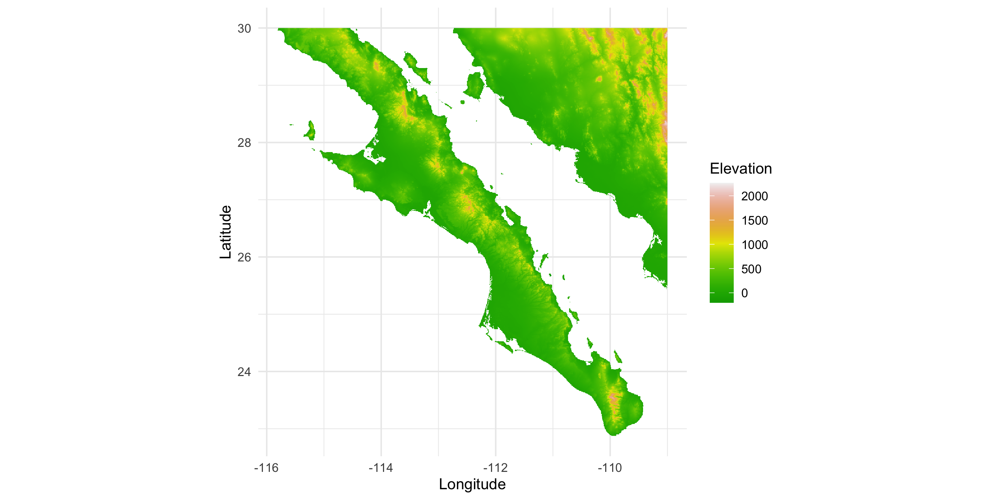
veridis Color Palettes

distiller Color Palettes
Associated with ColorBrewer (the distiller is the continuous version).

scico Color Palettes
Perceptually uniform color ramps for scientific output.
Manual Color Gradients
Overlay Data

A Shortcut: tidyterra
The data.frame route works, but it costs us a second copy of the data, hand-renamed columns, and remembering coord_equal(). The tidyterra library bridges terra and the tidyverse so we can skip all that.
geom_spatraster()plots aSpatRasterdirectly: noas.data.frame(), no extra copy, nocoord_equal().- Uses the raster’s CRS, so axes get proper °N / °W labels (just like
geom_sf()). - Large rasters are resampled for drawing (~500,000 cells) so plots stay fast.
- Map-ready color scales:
scale_fill_hypso_c(),scale_fill_whitebox_c(),scale_fill_wiki_c(). dplyrverbs (rename(),mutate(),filter(),select()) work on the raster and return a raster.
geom_spatraster()
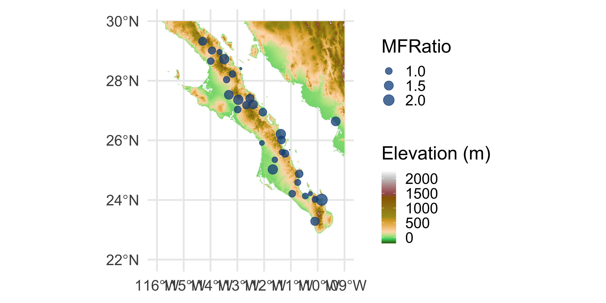
dplyr Verbs on Rasters
Without tidyterra: names(alt) <- ... to rename, indexing values() to subset. With it, the dplyr verbs we already know work on the raster: each layer acts like a column and each cell like a row.
class : SpatRaster
size : 960, 840, 1 (nrow, ncol, nlyr)
resolution : 0.008333333, 0.008333333 (x, y)
extent : -116, -109, 22, 30 (xmin, xmax, ymin, ymax)
coord. ref. : lon/lat WGS 84 (EPSG:4326)
source(s) : memory
varname : alt_22
name : Elevation
min value : -202
max value : 2263class : SpatRaster
size : 960, 840, 2 (nrow, ncol, nlyr)
resolution : 0.008333333, 0.008333333 (x, y)
extent : -116, -109, 22, 30 (xmin, xmax, ymin, ymax)
coord. ref. : lon/lat WGS 84 (EPSG:4326)
source(s) : memory
names : Elevation, Feet
min values : -202, -662.72968
max values : 2263, 7424.54092Multiple Layers in 1 Raster
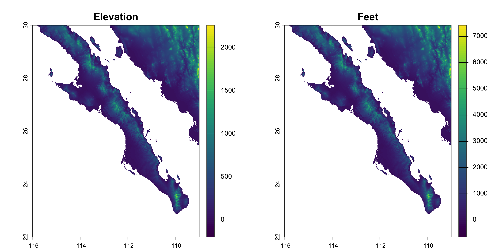
Getting Rasters with geodata
So far our raster came from a URL. The geodata library downloads many global data sets directly into SpatRaster (or SpatVector) objects.
| Data | Functions |
|---|---|
| Current climate (WorldClim) | worldclim_global(), worldclim_country(), worldclim_tile() |
| Future climate (CMIP6) | cmip6_world(), cmip6_tile() |
| Elevation | elevation_global(), elevation_30s() |
| Land cover, soils, human footprint | landcover(), soil_world(), footprint() |
| Political boundaries (vector) | gadm() |
The Bioclim Variables
WorldClim 2.1 (Fick & Hijmans 2017): 19 bioclimatic variables derived from monthly temperature and precipitation (1970–2000 averages). They capture annual trends, seasonality, and extremes, which is why they are a staple of species distribution modeling.
Temperature (°C)
- BIO1 Annual Mean Temperature
- BIO2 Mean Diurnal Range
- BIO3 Isothermality (BIO2/BIO7 ×100)
- BIO4 Temperature Seasonality (SD ×100)
- BIO5 Max Temp of Warmest Month
- BIO6 Min Temp of Coldest Month
- BIO7 Temperature Annual Range
- BIO8 Mean Temp of Wettest Quarter
- BIO9 Mean Temp of Driest Quarter
- BIO10 Mean Temp of Warmest Quarter
- BIO11 Mean Temp of Coldest Quarter
Precipitation (mm)
- BIO12 Annual Precipitation
- BIO13 Precip of Wettest Month
- BIO14 Precip of Driest Month
- BIO15 Precip Seasonality (CV)
- BIO16 Precip of Wettest Quarter
- BIO17 Precip of Driest Quarter
- BIO18 Precip of Warmest Quarter
- BIO19 Precip of Coldest Quarter
Downloading a 30 arc-second Tile
30 arc-seconds is 1/120° (about 1km). At that resolution the world comes in 30° × 30° tiles: give any longitude and latitude inside the tile you want.
class : SpatRaster
size : 3600, 3600, 19 (nrow, ncol, nlyr)
resolution : 0.008333333, 0.008333333 (x, y)
extent : -120, -90, 4.163336e-16, 30 (xmin, xmax, ymin, ymax)
coord. ref. : lon/lat WGS 84 (EPSG:4326)
source : tile_27_wc2.1_30s_bio.tif
names : bio_1, bio_2, bio_3, bio_4, bio_5, bio_6, ...
min values : 2.05, 3.741667, 25.904978, 33.650963, 9.4, -5.8, ...
max values : 28.754168, 20.975, 88.148148, 786.332458, 42.5, 22.4, ...Bioclim for Baja
Same tile, same grid as alt_22, so the same baja_extent crops it. select() picks layers by name.
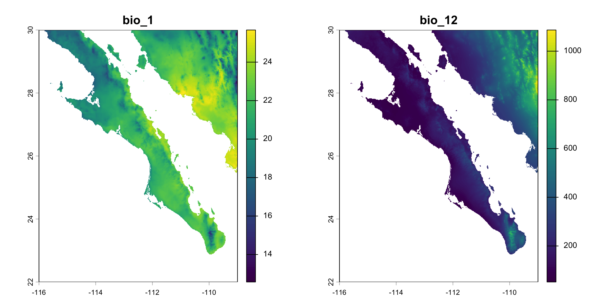
Annual Precipitation
Raster Manipulations
Map Interactivity
You can work with raster data interactively (I just cannot do it here on this presentation because it has to be in real time).

Points from click()
Here are what the points look like.
Reprojecting Rasters
Just like points, we can reproject the entire raster using the project() function. Here I am going to project the raster into UTM Zone 12N, a common projection for this part of Mexico from epsg.io.
The terra library understands EPSG codes, so all we need is the code for that projection.
Visualizing
class : SpatRaster
size : 1012, 817, 1 (nrow, ncol, nlyr)
resolution : 885.5488, 885.5488 (x, y)
extent : -16579.09, 706914.3, 2433154, 3329330 (xmin, xmax, ymin, ymax)
coord. ref. : Mexico ITRF2008 / UTM zone 12N (EPSG:6367)
source(s) : memory
name : alt_22
min value : -202
max value : 2207.08374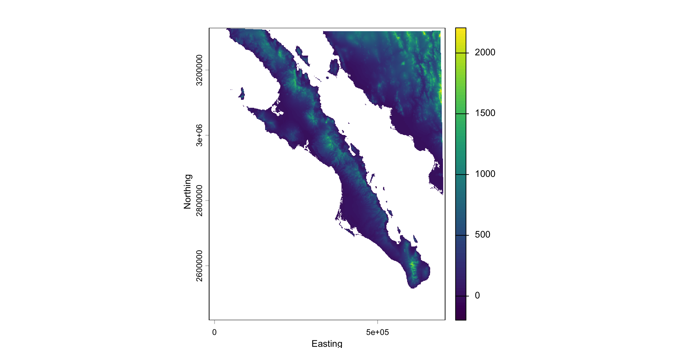
Mixing Projections: The Problem
The raster is now in UTM (EPSG:6367, meters) but the beetles are still lon/lat (EPSG:4326, degrees).
Base plot( add=TRUE ) does not work: (-113, 27) is drawn at 27 m north, off the map. No error, no warning.
Mixing Projections with ggplot
Applications
Research Question 1 - Elevation Envelope
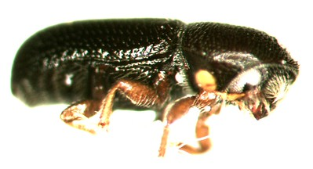
What is the elevation niche envelope for this species?
Is there any indication that elevation is related to sex-bias?
Extracting Raster Data
extract() takes all the sites at once (as a SpatVector) and returns one row per site, in order. ID = FALSE drops the point-number column.
Simple feature collection with 6 features and 3 fields
Geometry type: POINT
Dimension: XY
Bounding box: xmin: -114.2935 ymin: 24.00789 xmax: -109.327 ymax: 29.32541
Geodetic CRS: WGS 84
# A tibble: 6 × 4
Site MFRatio Elevation geometry
<chr> <dbl> <dbl> <POINT [°]>
1 32 1.48 18 (-109.327 26.63783)
2 73 2.2 103 (-109.8507 24.00789)
3 93 1.19 66 (-112.0461 26.94589)
4 const 1.64 50 (-111.675 25.0247)
5 159 1.47 87 (-113.3161 27.52944)
6 88 1.28 681 (-114.2935 29.32541)Visualizing Elevation Envelope
The sites span 6m to 681m, but is that a subset of the landscape?

15% of the land is above the highest site.
Testing for MFRatio and Elevation Relationship
Pearson's product-moment correlation
data: beetles$MFRatio and beetles$Elevation
t = -0.55949, df = 29, p-value = 0.5801
alternative hypothesis: true correlation is not equal to 0
95 percent confidence interval:
-0.4415112 0.2605426
sample estimates:
cor
-0.1033377 No evidence of a relationship (\(\rho =\) -0.1, \(P =\) 0.58).
Research Question 2 - Elevation Transect
const is on the Pacific-side plain; 169 is on the Gulf coast. The Sierra de la Giganta is in between.
Does the terrain between
constand169rise above the beetle’s elevation envelope (681m), and for how far?
- Connect the two sites with a line (the transect).
- Put evenly spaced points along the line.
- Extract elevation at each point & its distance from the start.
- Plot elevation vs. distance.
Building the Transect
Order matters (the profile starts at the first site), so make it explicit with a factor.
Simple feature collection with 2 features and 8 fields
Geometry type: POINT
Dimension: XY
Bounding box: xmin: -111.675 ymin: 25.0247 xmax: -111.3783 ymax: 26.20876
Geodetic CRS: WGS 84
# A tibble: 2 × 9
Site Males Females Suitability MFRatio GenVarArapat GenVarEuphli
<chr> <dbl> <dbl> <dbl> <dbl> <dbl> <dbl>
1 const 18 11 0.174 1.64 0.280 0.235
2 169 47 28 0.313 1.68 0.122 0.319
# ℹ 2 more variables: geometry <POINT [°]>, Elevation <dbl>Building the Transect
st_union() keeps the points in order; st_cast() turns them into a line.
Building the Transect
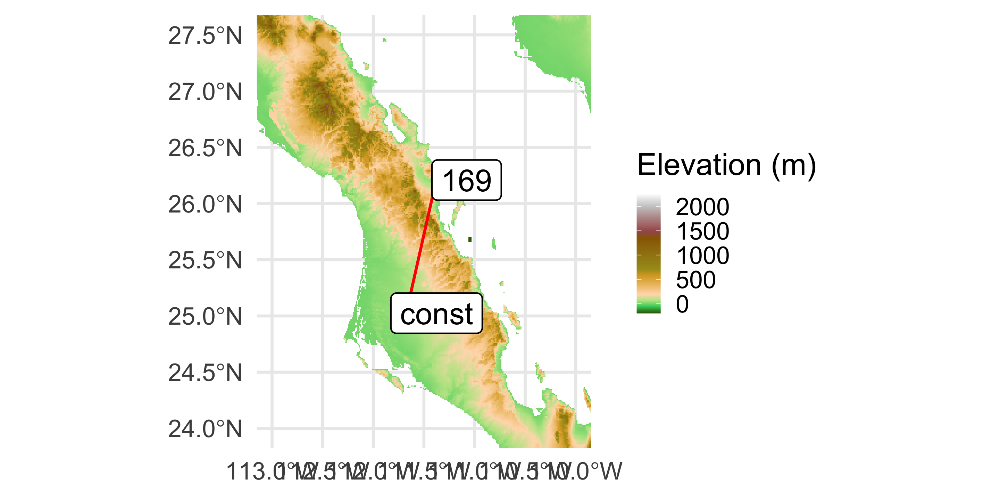
Sampling Along the Transect
A point every 500m needs meters, so project to UTM first. Cells are just under 1km, so 500m steps skip none.
Geometry set for 100 features
Geometry type: POINT
Dimension: XY
Bounding box: xmin: 432050.1 ymin: 2768507 xmax: 462053.1 ymax: 2898203
Projected CRS: Mexico ITRF2008 / UTM zone 12N
First 5 geometries:Data for Plotting
Extract from the UTM raster (alt.utm) so the CRSs match; distance is measured from the first point.
Data for Plotting
Put them into a data.frame
The Elevation Profile
About 2.5km of the direct route is above every sampled beetle site (peak: 804m).
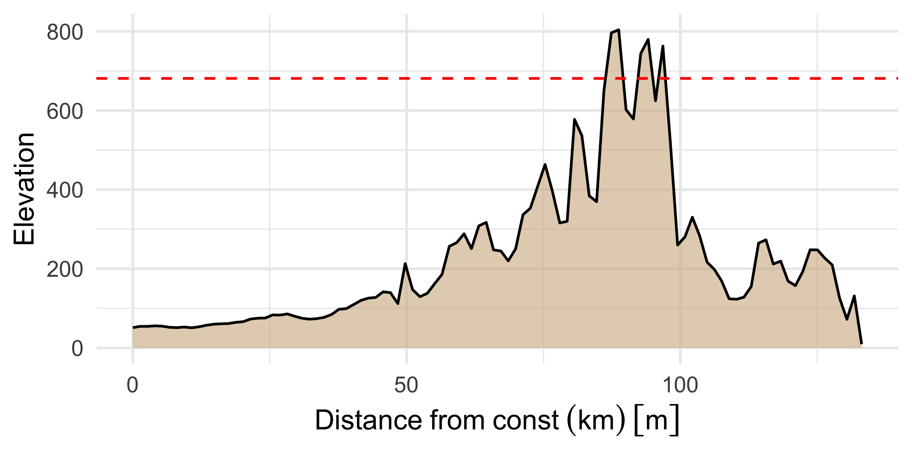
Research Question 3 - Connectivity in Euphorbia lomelii
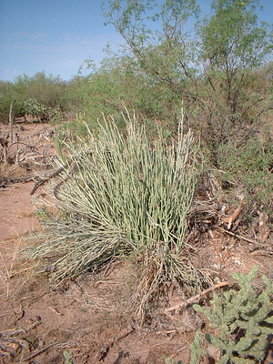
Hummingbird Pollinated
Elevation-driven Flowering Phenology (+/- 100m synchrony)
How can we find the locations that share an elevational ‘band’ with any one target locale?
Extracting Data From Rasters
What are the parts of Baja California that are within 100m of the elevation of site named San Francisquito (
sfran)?
To answer this, we have the following general outline of operations.
- Find the coordinates of the site named
sfran
- Extract the elevation from the
altraster that is within 100m (+/-) of that site. - Plot the whole baja data as a background
- Overlay all the locations within that elevation band.
To do this we will use both the alt and the beetles data objects.
Isolating the Point
Simple feature collection with 1 feature and 8 fields
Geometry type: POINT
Dimension: XY
Bounding box: xmin: -112.964 ymin: 27.3632 xmax: -112.964 ymax: 27.3632
Geodetic CRS: WGS 84
# A tibble: 1 × 9
Site Males Females Suitability MFRatio GenVarArapat GenVarEuphli
* <chr> <dbl> <dbl> <dbl> <dbl> <dbl> <dbl>
1 sfran 26 16 0.321 1.62 0.323 0.238
# ℹ 2 more variables: geometry <POINT [°]>, Elevation <dbl>Extracting Data at a Point
To extract data from SpatRaster objects, we need to coerce (sf \(\to\) SpatVector with vect()).
Namespace Collisions
The function extract() is defined in the libraries terra, tidyr, R.utils, and magrittr, causing an issue for R. It is not smart enough to know which to use, so the version in the last library that was pulled in will be used. To ensure you have the correct one, you can use package_name::function() notation.
Filter the Raster based on Elevation Similarity
filter() the raster itself: cells outside the band become NA and the result is still a SpatRaster.
class : SpatRaster
size : 960, 840, 1 (nrow, ncol, nlyr)
resolution : 0.008333333, 0.008333333 (x, y)
extent : -116, -109, 22, 30 (xmin, xmax, ymin, ymax)
coord. ref. : lon/lat WGS 84 (EPSG:4326)
source(s) : memory
name : Elevation
min value : 205
max value : 405Make a Background.
The land underneath is for context (fill = "gray80") and we omit the ocean (the non-NA cells) and convert this layer into a polygon (a SpatVector).
class : SpatVector
geometry : polygons
dimensions : 1, 1 (geometries, attributes)
extent : -115.8083, -109, 22.875, 30 (xmin, xmax, ymin, ymax)
coord. ref. : lon/lat WGS 84 (EPSG:4326)
names : Elevation
type : <int>
values : 1Pulling It Together
library(ggrepel)
ggplot() +
geom_spatvector(data = land, fill = "gray80", color = NA) +
geom_spatraster(data = elev_band) +
scale_fill_gradient2(
low = "darkolivegreen",
mid = "yellow",
high = "brown",
midpoint = 305,
na.value = NA
) +
geom_sf(
aes(size = MFRatio),
alpha = 0.5,
color = "dodgerblue3",
data = beetles
) +
geom_text_repel(
aes(label = Site, geometry = geometry),
data = beetles,
stat = "sf_coordinates",
size = 4,
color = "dodgerblue4"
)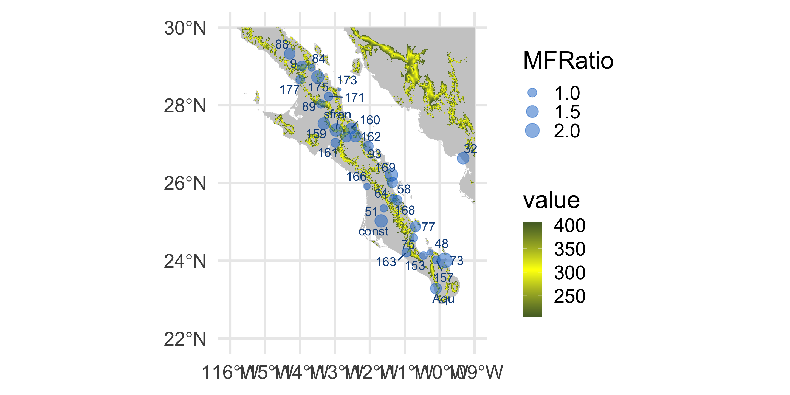